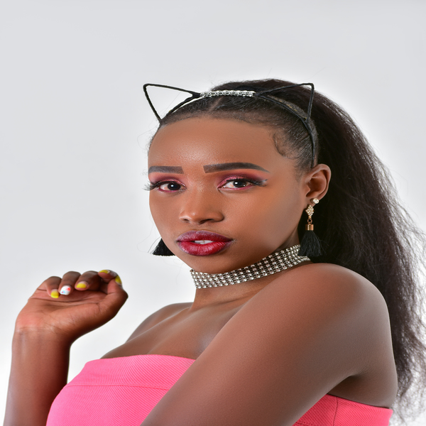

|  | Baby T KenyaFemale rapper from Nairobi Kenya |
Born and raised in Ongata rongai though I have schooled across the country. I was born in the year 1993 February 10th as the last born in a family of 3 raised by a single parent(father). My passion for music started at an early stage but I officially started recording at the age of 19 that was in 2012. I derive my passion from life and the main fact that am shy as a person and music is the only way I can express myself. I mainly do hip-hop but I mostly consider myself as an artist or entertainer, hence I prefer the term rapper to hip-hop artist. I have worked on different genres of music and I believe in overstepping boundaries as long as my message reaches the targeted groups. All in all am an all rounded artist with much to offer.